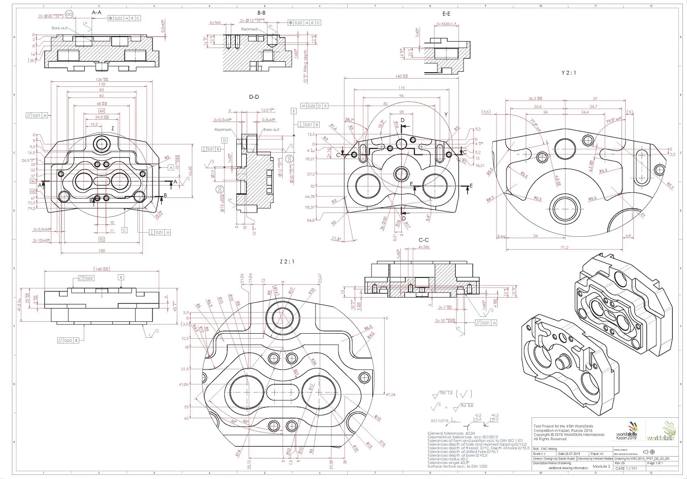
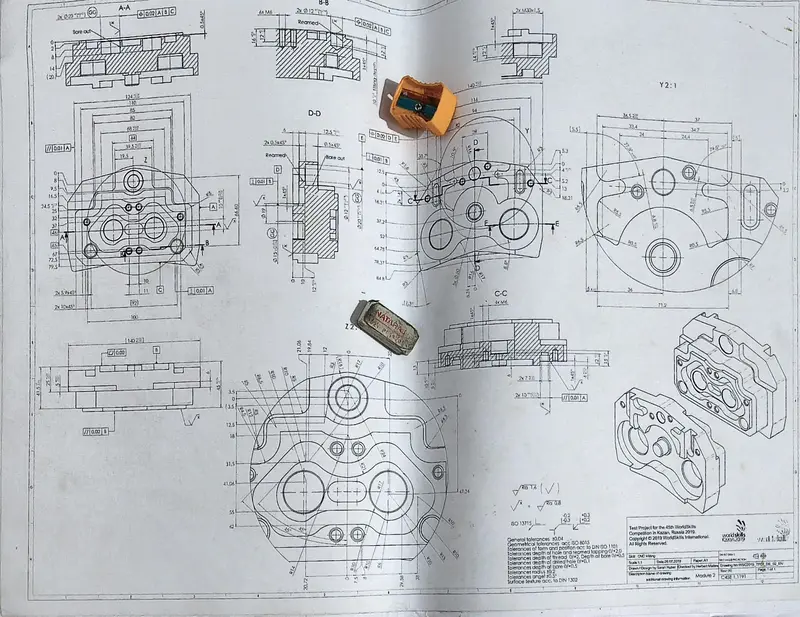

WorldSkills 2019 · Kazan, Russia
CNC Milling — Test Project 2
3D Model
Loading 3D model…
Drag to rotate · Scroll or pinch to zoom · Right-drag or two fingers to pan
views
Engineering Drawing

Behind this model
I modelled this part in Siemens NX during the 2020–2021 lockdown, working from this A3 photocopy of the drawing. I still have it.

Machining Notes
Test Project 2 from the WorldSkills 2019 competition in Kazan. It was Module 2 of the 2019 competition. Use Show bottom on the 3D model to see the underside.
Key features (from the drawing)
- Overall size about 140 × 97.5 × 45 mm
- Threads: M30 × 1.5 (2×), M6 (4× + 6×)
- Fits: Ø12 H7 (2×), Ø20 H7 (2×), 15 f7
- General tolerance ±0.04
- Surface finish Ra 1.6, with Ra 0.8 where marked
- Material: steel C45E (1.1191)
Medallists · WorldSkills 2019
- Gold Zhenji Tian China
- Silver Seong-Min Kim Korea
- Silver Yuto Kikuchi Japan
- Silver Truong The Dieu Vietnam
- Bronze Patcharapol Sugkong Thailand
CNC Milling results from the official WorldSkills results. Equal scores share a medal, so some years have two golds or no bronze.
Downloads
The 3D model is a compressed glTF (.glb) file. It opens in Blender, the online glTF Viewer and most 3D apps.